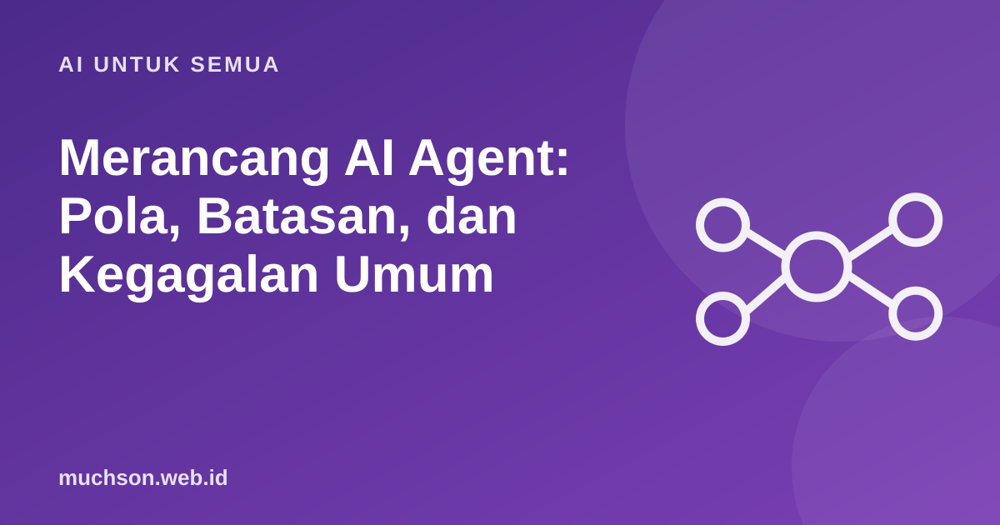

Beranda › Artikel › AI untuk Semua
AI untuk SemuaMerancang AI Agent: Pola, Batasan, dan Kegagalan Umum
Setelah membangun beberapa sistem AI untuk materi pelatihan dan otomasi kerja, saya belajar satu hal: agen yang paling berguna biasanya yang paling sederhana. Banyak masalah yang awalnya terlihat butuh "agen otonom" ternyata cukup diselesaikan dengan alur langkah yang jelas dan satu atau dua panggilan model.

Workflow atau agent?
Tulisan Anthropic "Building effective agents" (Desember 2024) membedakan dua hal yang sering dicampur:
Rekomendasinya: mulai dari solusi paling sederhana, dan tambah otonomi hanya bila jelas memberi hasil lebih baik.
Lima pola yang sering dipakai
Anatomi agent sungguhan
def jalankan_agent(tugas, alat, maks_langkah=8):
pesan = [{"role": "user", "content": tugas}]
for langkah in range(maks_langkah):
respon = model(pesan, tools=alat)
if respon.stop_reason != "tool_use":
return respon.teks # selesai
hasil = [jalankan_alat(p) for p in respon.panggilan_alat] # validasi + izin di sini
pesan += [respon.sebagai_pesan(), hasil_sebagai_pesan(hasil)]
catat(langkah, respon, hasil) # log setiap langkah
return "Berhenti: batas langkah tercapai, butuh bantuan manusia."- Batas langkah dan biaya per tugas.
- Log setiap langkah agar bisa ditelusuri ketika hasilnya aneh.
- Titik berhenti untuk manusia pada keputusan berisiko.
- Lingkungan terbatas (sandbox) bila agen menjalankan kode.
Kegagalan yang sering terjadi
| Gejala | Penyebab umum | Perbaikan |
|---|---|---|
| Agen berputar-putar memanggil alat yang sama | Hasil alat tidak informatif atau tujuan kabur | Pesan error yang jelas, kriteria selesai yang eksplisit, batas langkah |
| Memilih alat yang salah | Deskripsi alat mirip atau samar | Kurangi jumlah alat, perjelas kapan dipakai |
| Mengarang hasil tanpa memanggil alat | Instruksi tidak menekankan sumber | Wajibkan jawaban berdasar hasil alat, evaluasi dengan kasus uji |
| Biaya membengkak | Konteks makin panjang tiap langkah | Ringkas riwayat, pakai model kecil untuk langkah sederhana |
| Tindakan berbahaya | Hak akses terlalu luas, prompt injection | Hak minimum dan konfirmasi manusia |
Apakah tugas Anda butuh agent?
Tanya jawab
Perlukah framework seperti LangChain?
Tidak wajib. Banyak pola bisa ditulis dengan beberapa puluh baris kode langsung ke API. Framework membantu untuk hal tertentu, tetapi bisa menyembunyikan apa yang sebenarnya dikirim ke model.
Bagaimana mengukur keberhasilan agent?
Dengan eval set tugas nyata: persentase tugas selesai benar, jumlah langkah, biaya, dan seberapa sering perlu bantuan manusia.
Apa hubungannya dengan MCP?
MCP memudahkan memberi agen akses ke alat dan data yang standar. Prinsip hak minimum tetap berlaku.
Sumber dan bacaan lanjut
- Anthropic Engineering: Building effective agents
- Claude Docs: Tool use with Claude
- AI agent vs chatbot (artikel terkait)